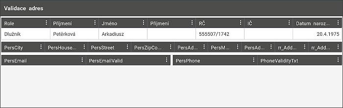
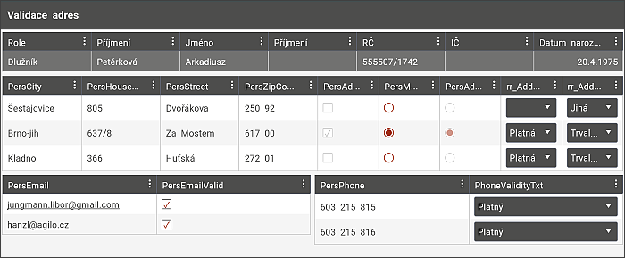
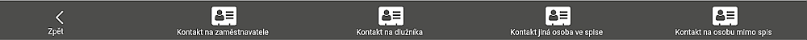

Kontakty
V první tabulce jsou zobrazeny všichni dlužníci.

Kliknutím na řádek (který začíná sloupcem Role) se v dolní části rozbalí k vybranému kontaktu všechny sebrané informace - adresa, email i telefon.

Ve spodní části může uživatel použít menu s možnostmi doplnění kontaktů - Dlužníka, jiné osoby ve spise či osoby mimo spis.
